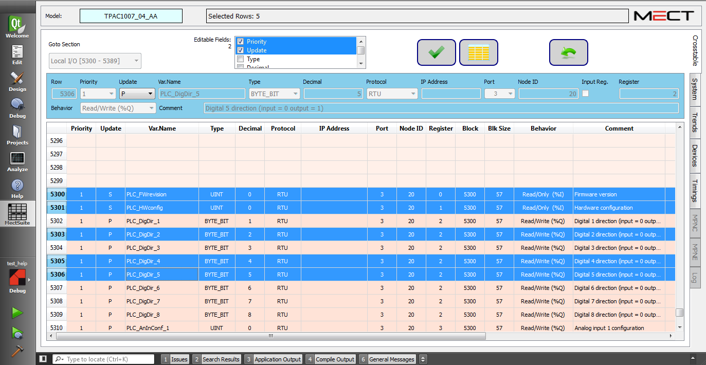
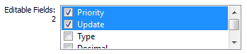

This function allows the parameters of several variables to be edited simultaneously, even if they are not contiguous, for example the priority, the protocol or the number of decimals.
By pressing the Multi Line Edit button and selecting more than one variable in Crosstable, the editing window will appear as follows:

Pressing the Multi Line Edit button again will return you to the main mode (Single Line Edit).
Only the fields selected in the Editable Fields box can be edited:
Confirm the changes made.
Undoes the last edit.